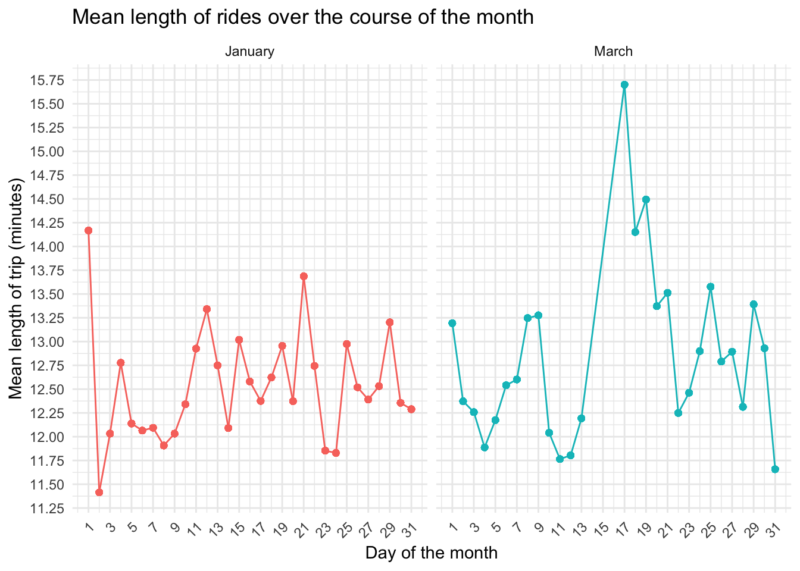

Visualizations
Station usage
The following two plots depict the number of trips that started from each of the current Citi Bike stations, for January and March of 2017. There was little difference between starting station usage in the two months. Pershing Square North
citibike_tidy %>%
filter(start_month == "March") %>%
group_by(start_station_name, start_station_latitude, start_station_longitude) %>%
summarize(n = n()) %>%
mutate(text_label = str_c("Station name: ", start_station_name, '\n# of trips started at this station: ', n)) %>%
plot_ly(x = ~start_station_longitude, y = ~start_station_latitude, type = "scatter", mode = "markers",
alpha = 0.5,
color = ~n,
text = ~text_label) %>%
layout(
title = "Starting station usage, March 2017",
xaxis = list(title = "Longitude"),
yaxis = list(title = "Latitude")
)#March ggplot of plotly above
#citibike_tidy %>%
# filter(start_month == "March") %>%
# group_by(start_station_id, start_station_latitude, start_station_longitude) %>%
# summarize(n = n()) %>%
# ggplot(aes(x = start_station_longitude, y = start_station_latitude, color = n)) +
# geom_point(alpha = 0.3) +
# scale_color_viridis() +
# coord_cartesian() +
# theme_classic()citibike_tidy %>%
filter(start_month == "January") %>%
group_by(end_station_name, end_station_latitude, end_station_longitude) %>%
summarize(n = n()) %>%
mutate(text_label = str_c("Station name: ", end_station_name, '\n# of trips ended at this station: ', n)) %>%
plot_ly(x = ~end_station_longitude, y = ~end_station_latitude, type = "scatter", mode = "markers",
alpha = 0.5,
color = ~n,
text = ~text_label)#Jan ggplot of plotly above
#citibike_tidy %>%
# filter(start_month == "January") %>%
# group_by(end_station_id, end_station_latitude, end_station_longitude) %>%
# summarize(n = n()) %>%
# ggplot(aes(x = end_station_longitude, y = end_station_latitude, color = n)) +
# geom_point(alpha = 0.3) +
# scale_color_viridis() +
# coord_cartesian() +
# theme_classic()
citibike_tidy %>%
filter(start_month == "March") %>%
group_by(end_station_name, end_station_latitude, end_station_longitude) %>%
summarize(n = n()) %>%
mutate(text_label = str_c("Station name: ", end_station_name, '\n# of trips ended at this station: ', n)) %>%
plot_ly(x = ~end_station_longitude, y = ~end_station_latitude, type = "scatter", mode = "markers",
alpha = 0.5,
color = ~n,
text = ~text_label)#March ggplot of plotly above
#citibike_tidy %>%
# filter(start_month == "March") %>%
# group_by(end_station_id, end_station_latitude, end_station_longitude) %>%
# summarize(n = n()) %>%
# ggplot(aes(x = end_station_longitude, y = end_station_latitude, color = n)) +
# geom_point(alpha = 0.3) +
# scale_color_viridis() +
# coord_cartesian() +
# theme_classic()Trips by gender (1 = Male, 2 = Female)
# Histogram of when people start their rides, by gender!
citibike_tidy %>%
group_by(gender) %>%
mutate(start_hour = str_sub(start_time, 0, 2),
start_hour = as.numeric(start_hour)) %>%
ggplot(aes(x = start_hour)) +
geom_histogram() +
labs(x = "Start hour",
y = "Frequency") +
facet_grid(~ gender)## `stat_bin()` using `bins = 30`. Pick better value with `binwidth`.
Age ranges and average time spent on ride
# who are the people over 100; also, this is kind of ug the way i have done it; whose trips are more than 500 hours??????? how is this calculated??
# Will definitely need to look into how some of these indicators are measured/calculated... This plot is pretty useless as is.
citibike_tidy %>%
mutate(trip_hour = trip_minutes / 60) %>%
ggplot(aes(x = rider_age, y = trip_hour)) +
geom_point(alpha = 0.5) +
geom_smooth(se = FALSE) +
facet_grid(~ gender)## `geom_smooth()` using method = 'gam' and formula 'y ~ s(x, bs = "cs")'
Most/least popular days of the week of travel
- Length of ride against day of month, by month
# Histogram of how long people ride for, by month!
# can we change the month labels??
citibike_tidy %>%
mutate(start_day = as.numeric(start_day)) %>%
group_by(start_month, start_day) %>%
mutate(mean_trip_hour = mean(trip_minutes / 60)) %>%
ggplot(aes(x = start_day, y = mean_trip_hour, color = start_month)) +
geom_point(alpha = 0.5) +
geom_smooth(se = FALSE) +
labs(x = "Day of the month",
y = "Mean length of trip (hours)") +
scale_color_hue(name = "Month") +
facet_grid(~ start_month)## `geom_smooth()` using method = 'gam' and formula 'y ~ s(x, bs = "cs")'
A work by Eric Morris, Grace Liu, & Tatini Mal-Sakar
Data obtained from Citi Bikes